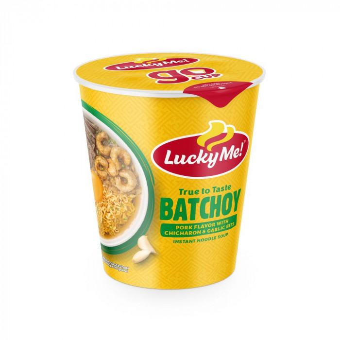

Delicious Cup Noodles

Description
Ingredients
- Lucky Me La Paz Batchoy
- water
- seasoning
Steps
- Boil water to make hot water.
- Slightly open the slid of the cup noodles.
- Open the seasoning and pour it inside the cup.
- Pour hot water until 80% of the cup is full.
- Close the lid.
- Wait for 5 minutes so the noodles can be cooked.
- After waiting, open the lid.
- Stir and mix the noodles.
- Enjoy!